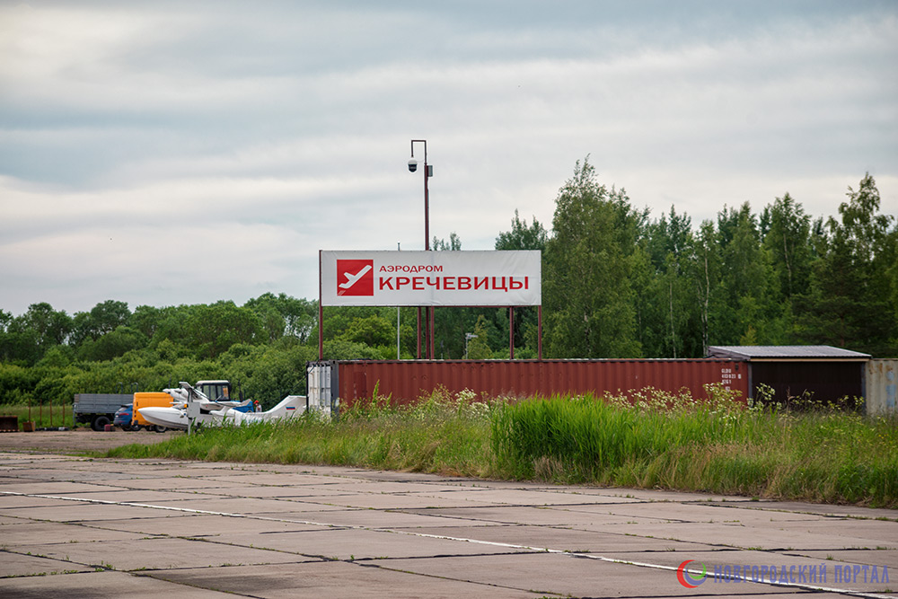

Хроника реконструкции
- — Ремонт посадочной площадки и инфраструктуры будет произведен
- — Строительство перенесли до 2025 года
- — Этот проект давно находится в недрах правительства
- — Нам нужен аэропорт
- — На аэродроме в Кречевицах открыли филиал авиационного клуба «Пегас»
- — Аэродром планируют сделать терминалом для лоукостеров
- — Не видит смысла в авиасообщении Великий Новгород – Москва
- — Аэродром может появиться только при федеральном финансировании
Информация об Аэродроме
Аэропорт Кречевицы — несостоявшийся гражданский аэропорт Великого Новгорода. Уже много лет региональные власти обещают открыть аэропорт и начать регулярные авиационные перевозки. Но пока аэропорт нерегулярно используется лишь малой авиацией.
Клуб «Пегас» на территории аэродрома Кречевицы
В 2014 году аэродром был передан в собственность Новгородской области. В настоящее время площадка обустраиваемого аэродрома размещается в границах землеотвода аэродрома «Кречевицы» в 14 км северо-восточнее центра города Великого Новгорода. Аэродром имеет статус посадочной площадки для осуществления взлета и посадки в дневных простых метеоусловиях. Регулярные пассажирские и грузовые перевозки не осуществляются.
Длина искусственной взлетно-посадочной полосы составляет 2000 м. при ширине 48 м. Кроме того, аэродром включает в себя магистральную рулежную дорожку, круговую рулежную дорожку, сеть соединительных рулежных дорожек шириной 16 м и перрон для стоянки воздушных судов. Объекты светосигнального и радиотехнического оборудования отсутствуют.
На аэродроме ведется работа по приему воздушных судов 3 класса и вертолетов всех типов.
Видео
Карта
Схемы


Контакты
Администрация: 738566@mail.ru
начальник ГОКУ «НовгородТрансАвиа»: Трембицкий Сергей Сергеевич
Старший авиационный начальник:
Вячеслав Васильевич Гладышев +79062015526
Инфраструктура, гостиница, такси
На территории в южной части посадочной площадки, примыкающей к магистральной РД базируется клуб «Пегас» Клубный домик (два 2-х местных номера), душ, туалет. Трансфер до города.
7151632@mail.ruМатериалы
- ФАВТ: посадочные площадки и аэродромы
- Википедия: Кречевицы_(аэропорт)
- igor113: Открытие аэродрома Кречевицы 23102016 ч5 Кречевицы и путь домой....
- flightradar24: карта
- urban3p: В\Ч 21350-15, аэродром Кречевицы, 04.2019
- foursquare: Аэропорт Кречевицы